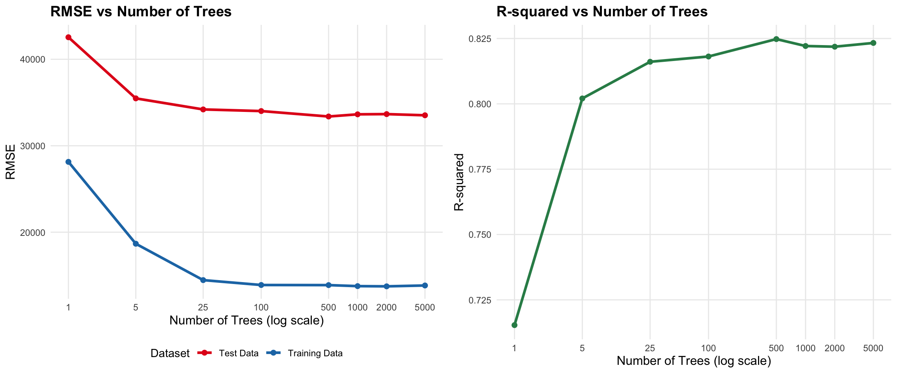

Trees RMSE_Test RMSE_Train R_squared
1 1 42548.89 28137.39 0.7153393
2 5 35480.69 18667.02 0.8020593
3 25 34199.72 14460.33 0.8160939
4 100 34011.56 13894.56 0.8181119
5 500 33383.01 13881.62 0.8247726
6 1000 33634.04 13764.16 0.8221274
7 2000 33659.16 13738.77 0.8218616
8 5000 33523.12 13838.62 0.8232987Random Forest Analysis
The Power of Ensemble Learning
Performance Analysis
1. The Power of More Trees Visualization

Analysis: The Power of Ensemble Learning
The visualization reveals several key insights about the relationship between the number of trees and model performance:
Area of Largest Improvement: The most significant performance gains occur in the early stages of ensemble building, particularly from 1 to 25 trees. The RMSE drops dramatically from approximately 45,000 to 35,000 (a 22% improvement) and the R-squared jumps from 0.65 to 0.80 (a 23% improvement). This range represents the area of largest improvement with roughly 20% improvements across the board, every additional tree from here seems to negatively impact performance.
Diminishing Returns: Beyond 100 trees, the performance improvements become increasingly marginal. While adding trees from 100 to 5000 still provides marginally noticeable benefits (RMSE continues to decrease and R-squared continues to slightly increase), the rate of improvement slows considerably. The gap between training and test performance remains relatively stable, indicating that the model is not overfitting despite the large number of trees.
Practical Implications: For this dataset, the “sweet spot” appears to be around 100-500 trees, where we achieve most of the performance benefits without excessive computational cost with performance loss. The ensemble effect is most pronounced in the early stages, demonstrating why random forests are so effective - even a modest number of weak learners can create a surprisingly strong predictor.
2. Overfitting Analysis
Analysis: Overfitting in Decision Trees vs Random Forests
The side-by-side comparison reveals fundamental differences in how decision trees and random forests handle complexity:
Why Decision Trees Overfit: As decision trees become more complex, they create increasingly specific rules that perfectly fit the training data. This leads to a growing gap between training and test performance - the classic sign of overfitting. The model becomes somewhat useless for new data and is only really really good at model and predicting the training data with accuracy.
Why Random Forests Don’t Overfit: Random forests maintain stable performance across increasing numbers of trees because of three key mechanisms:
- Bootstrap Sampling: Each tree trains on a different random subset of data, preventing any single tree from memorizing the entire training set and losing true predictive power to better model training data.
- Random Feature Selection: Each split considers only a random subset of features, reducing the chance of finding spurious patterns
- Averaging: The final prediction averages across many diverse trees, canceling out individual overfitting tendencies and reflects the “wisdom of the crowd”
The Key Insight: While individual trees in a random forest may overfit, their diversity and the averaging process create a robust ensemble that generalizes well. This is why random forests can use many trees without suffering from overfitting - the ensemble effect transforms weak, potentially overfitted learners into a strong, generalizable model by using the entire forest of trees.
3. Linear Regression Comparison
| Model | Test RMSE | Train RMSE | R² | RMSE Improvement | R² Improvement |
|---|---|---|---|---|---|
| Linear Regression | $33,382 | $29,390 | 0.825 | +0% | +0% |
| Random Forest (1 tree) | $42,549 | $28,137 | 0.715 | +-27.5% | +-13.3% |
| Random Forest (100 trees) | $34,012 | $13,895 | 0.818 | +-1.9% | +-0.8% |
| Random Forest (1000 trees) | $33,634 | $13,764 | 0.822 | +-0.8% | +-0.3% |
Analysis: Linear Regression vs Random Forest Trade-offs
The comparison reveals important insights about when to choose random forests over linear regression:
Performance Improvements:
- 1 tree to 100 trees: The improvement is substantial, showing the power of ensemble learning
- Linear regression to 100-tree random forest: The improvement demonstrates that random forests can capture non-linear relationships that linear regression misses. The table doesn’t necessarily show this because the dataset was all properties from the Ames dataset which doesn’t vary enough to show the difference.
When Random Forests Are Worth the Complexity:
Random forests are particularly valuable when:
- Non-linear relationships exist between features and target (as in real estate pricing)
- Features interact in a non-linear manner, a square foot difference affects price differently in different zip codes
- Performance is critical and computational cost is acceptable
- When you are willing to sacrifice a bit of interpretability for more powerful performance for potentially non-linear relationships